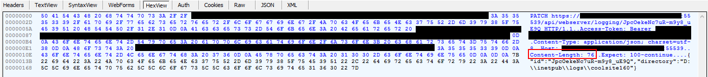
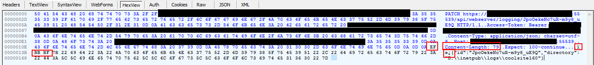

This week I ran across a problem when building a custom extension method to format a PATCH request to an api endpoint. Basically I wanted to create a PatchAsync method that matched the same semantics as PostAsync and GetAsync in HttpClient. I had some more unique JSON serialization requirements working with the IIS Admin rest api like snake_casing and booleans and numbers serialized at string literals like "124" or "true", so I needed to be able to pass my own JSON.NET configuration to the serialization.
Borrowing from this SO post I crafted this extension method:
public static async Task<HttpResponseMessage> PatchAsync<T>(this HttpClient client, string requestUri, T value, MediaTypeFormatter formatter)
{
var method = new HttpMethod("PATCH");
HttpRequestMessage request;
using (var ms = new MemoryStream()) {
var jsonFormatter = formatter as JsonMediaTypeFormatter;
jsonFormatter?.WriteToStream(typeof(T), value, ms, Encoding.UTF8);
var content = Encoding.UTF8.GetString(ms.GetBuffer(), 0, (int)ms.Length);
request = new HttpRequestMessage(method, requestUri)
{
Content = new StringContent(content, Encoding.UTF8, jsonFormatter?.SupportedMediaTypes.First()?.MediaType)
};
}
HttpResponseMessage response;
try
{
response = await client.SendAsync(request);
}
catch (TaskCanceledException e)
{
throw e;
}
return response;
}
As far as I could tell from human eyeballs everything looked good, but when I ran this code from code it would bomb with "Unsupported Media Type: Invalid JSON". I could craft the same request by hand in fiddler or postman and it would work!
I did notice one odd artifact in the requests, the Content-Length didn't match up between the failing and succeeding requests even with what looked like the same payload...
PATCH https://mycoolserver:55539/api/webserver/logging/JpcOekeNc7uR-m9y8_uE9Q HTTP/1.1
Access-Token: Bearer abcdefghijklmnopqrstuvwxyz
Content-Type: application/json; charset=utf-8
Host: mycoolserver:55539
Content-Length: 76
Expect: 100-continue
{"id":"JpcOekeNc7uR-m9y8_uE9Q","directory":"D:\\inetpub\\logs\\coolsite160"}
HTTP/1.1 200 OK
Cache-Control: public, max-age=0
Transfer-Encoding: chunked
Content-Type: application/vnd.Microsoft.WebServer.Logging.2.0.0+json; charset=utf-8
Server: Microsoft-HTTPAPI/2.0
Date: Tue, 08 Aug 2017 20:08:59 GMT
// Success Response
PATCH https://mycoolserver:55539/api/webserver/logging/JpcOekeNc7uR-m9y8_uE9Q HTTP/1.1
Access-Token: Bearer abcdefghijklmnopqrstuvwxyz
Content-Type: application/json; charset=utf-8
Host: mycoolserver:55539
Content-Length: 79
Expect: 100-continue
{"id":"JpcOekeNc7uR-m9y8_uE9Q","directory":"D:\\inetpub\\logs\\coolsite160"}
HTTP/1.1 415 Unsupported Media Type
Cache-Control: public, max-age=0
Transfer-Encoding: chunked
Content-Type: application/problem+json
Content-Language: en
Server: Microsoft-HTTPAPI/2.0
Accept-Patch: application/json;charset=utf-8
Date: Tue, 08 Aug 2017 20:09:10 GMT
34
{"title":"Invalid JSON request object","status":415}
0
Aaaah HAAAA! There must be some invisible characters my dear Watson!

So I cracked open the trusty HEX editor and lo and behold! A BOM (literally) aka a byte order mark has snuck it's way inbetween my request headers and JSON payload! This 3-byte mark is included in UTF encoded stuff to help readers decode correctly. Ironically it breaks some deserializers, like the one in the IIS Rest Admin API!
Successful request: 
Failed request: 
After I discovered this the fix was pretty easy, .NET provides a new UTF8Encoding type that can be passed true or false to its constructor to indicated whether a BOM is wanted.
So the fixed extension method:
public static async Task<HttpResponseMessage> PatchAsync<T>(this HttpClient client, string requestUri, T value, MediaTypeFormatter formatter)
{
var method = new HttpMethod("PATCH");
HttpRequestMessage request;
// No BOM now
var utf8 = new UTF8Encoding(false);
using (var ms = new MemoryStream()) {
var jsonFormatter = formatter as JsonMediaTypeFormatter;
jsonFormatter?.WriteToStream(typeof(T), value, ms, utf8);
var content = utf8.GetString(ms.GetBuffer(), 0, (int)ms.Length);
request = new HttpRequestMessage(method, requestUri)
{
Content = new StringContent(content, utf8, jsonFormatter?.SupportedMediaTypes.First()?.MediaType)
};
}
HttpResponseMessage response;
try
{
response = await client.SendAsync(request);
}
catch (TaskCanceledException e)
{
throw e;
}
return response;
}
Hopefully this helps out any of you JSON payload peeps trying to customize HttpClient. Somebody set us up the 💣!
comments powered by Disqus